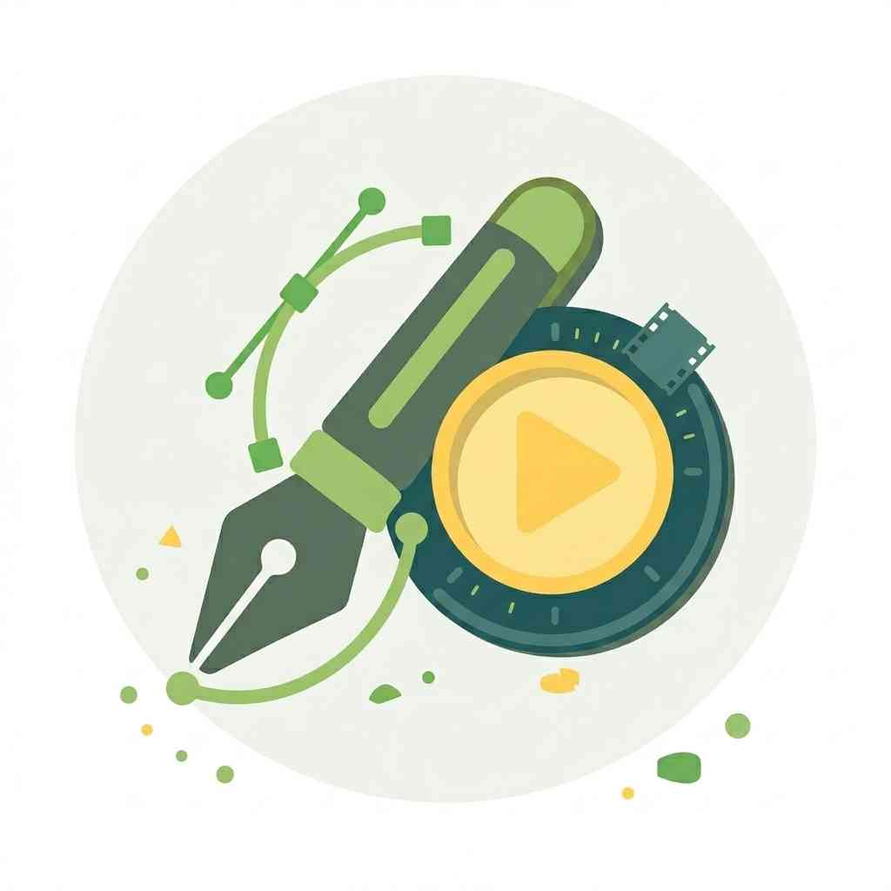
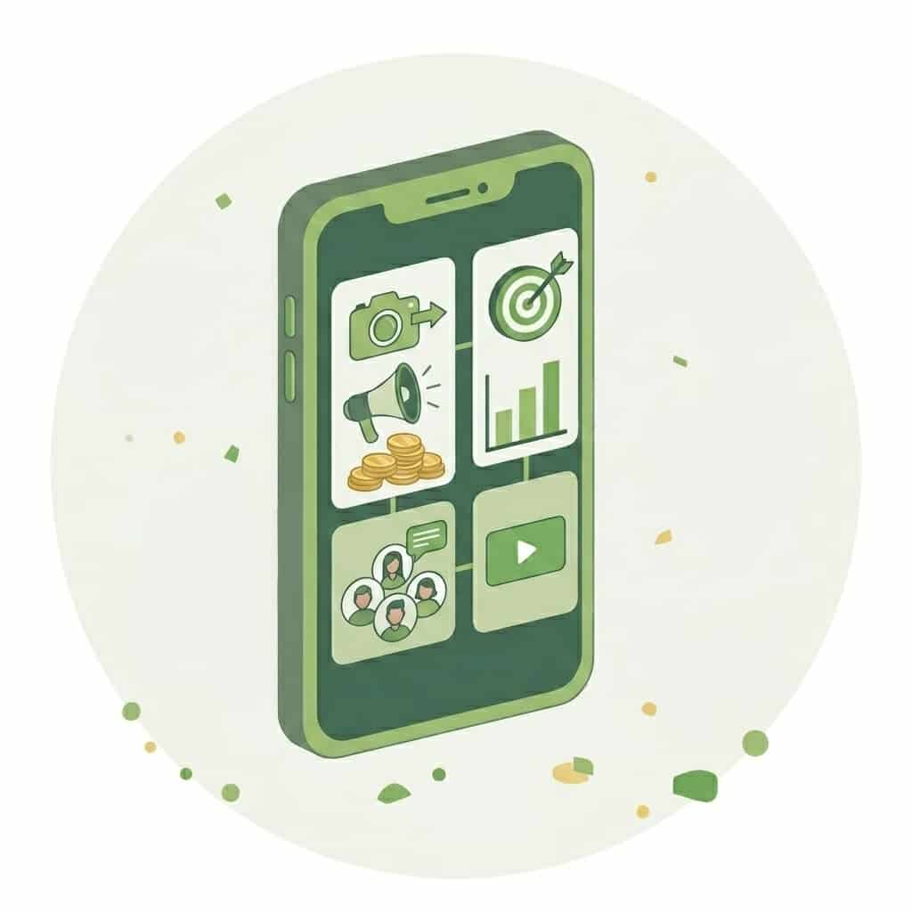
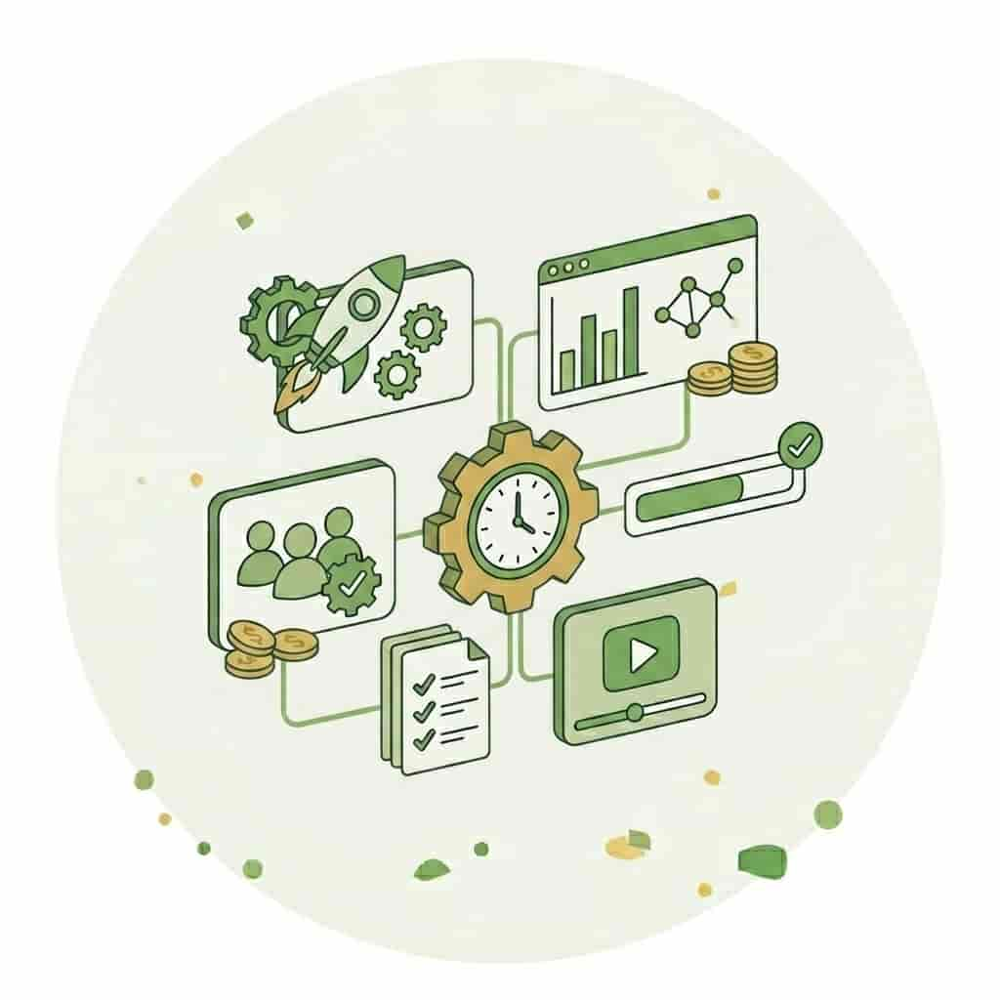
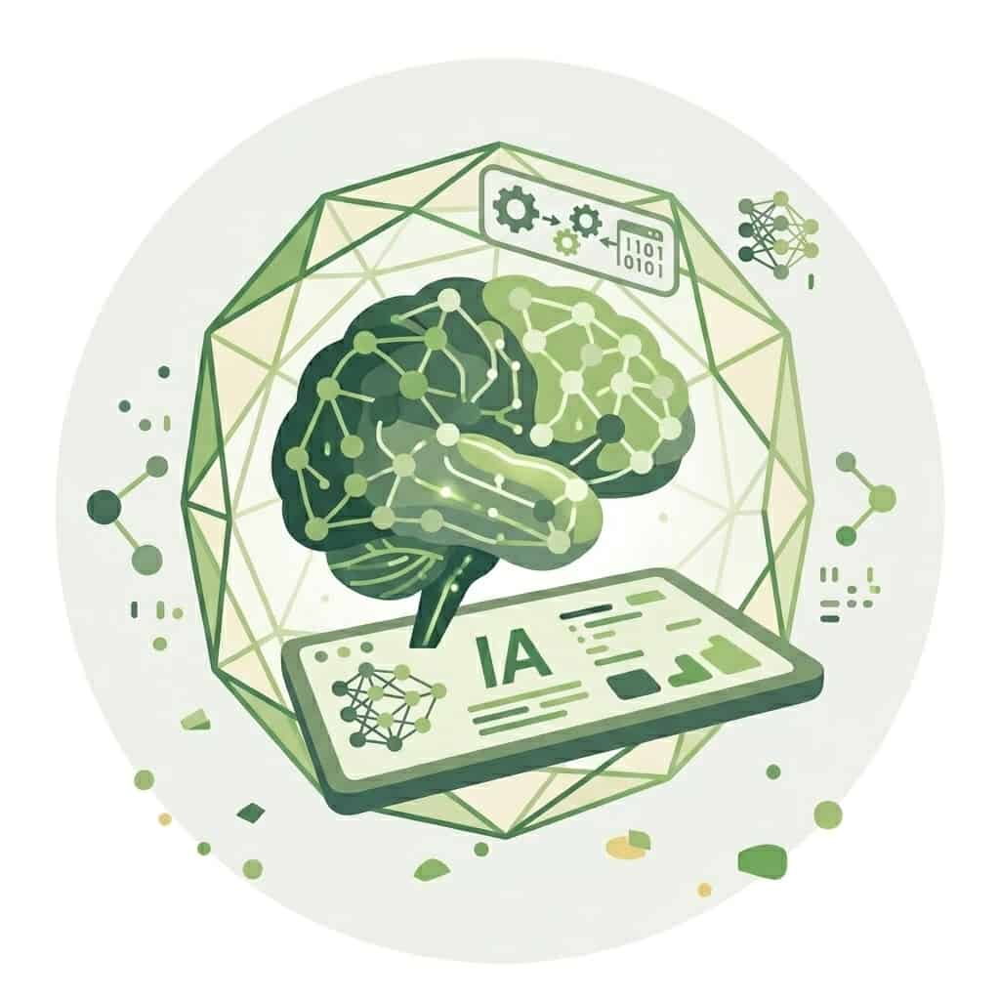

Marketing e Investigación de Mercados
No solo hago marketing. Impulso el crecimiento con IA.
Actualmente, estoy acabando la carrera de Marketing e Investigación de Mercados en la Universidad de Sevilla. Me apasiona la analítica, la creatividad y la automatización inteligente. Busco mi próximo reto para aportar una visión ágil, innovadora y orientada a resultados. ¿Me ayudas a conseguirlo?

Más allá de los libros
Soy una mente curiosa en constante evolución. No me conformo con lo tradicional; exploro continuamente nuevas herramientas de inteligencia artificial y soluciones de automatización para optimizar procesos. En mi tiempo libre me gusta aprender sobre marketing y dominar nuevas habilidades. Mi objetivo es aportar valor a cada proyecto.
Mi ecosistema digital

Analítica y SEO
Analítica y SEO
Transformo métricas en decisiones con GA4, Hotjar, Search Console y Power BI. Domino el SEO técnico y estratégico con SE Ranking y Screaming Frog.

Diseño y vídeo
Diseño y vídeo
Tengo experiencia en diseño gráfico utilizando Canva y Procreate, junto con edición de vídeo en CapCut e iMovie para contenido de alto impacto.
Contenido y web
Contenido y web
He utilizado WordPress, PrestaShop y Drupal para gestionar contenido. Además, tengo conocimientos en email marketing con Mailchimp y en HTML/CSS mediante VS Code.

Paid y redes
Paid y redes
He configurado campañas en Google Ads y Meta Ads. Asimismo, he llevado las redes sociales de varios clientes con ayuda de Meta Business Suite.

Productividad
Productividad
Organizo todas las tareas con Notion y Trello. También domino suites de productividad (Microsoft Office y Google Suite) para una gestión de proyectos impecable y colaborativa.

IA
IA
Me gusta explorar nuevas herramientas de IA, así como descubrir las últimas novedades de marketing e IA. He utilizado Google Antigravity, Claude Code para automatizar lo rutinario.
Mi Trayectoria en Resultados
Social Media, Content & Paid Media
Planificación integral y ejecución de campañas. Desde la redacción de copywriting persuasivo hasta la configuración técnica de anuncios en Google y Meta para maximizar el retorno.
SEO & Web Performance
Análisis profundo de indexación, estudios de palabras clave y auditorías con herramientas como Screaming Frog. Monitorización de rendimiento web para detectar oportunidades de crecimiento real.
Automatización & IA
Implementación de soluciones tecnológicas avanzadas para optimizar el marketing diario, integrando herramientas de IA y entornos de desarrollo para aportar una visión más ágil y eficiente.
¿Hacemos algo épico?
Estoy lista para aprender, adaptarme y, sobre todo, aportar resultados desde el primer día. ¿Hablamos de cómo puedo sumar a tu equipo?